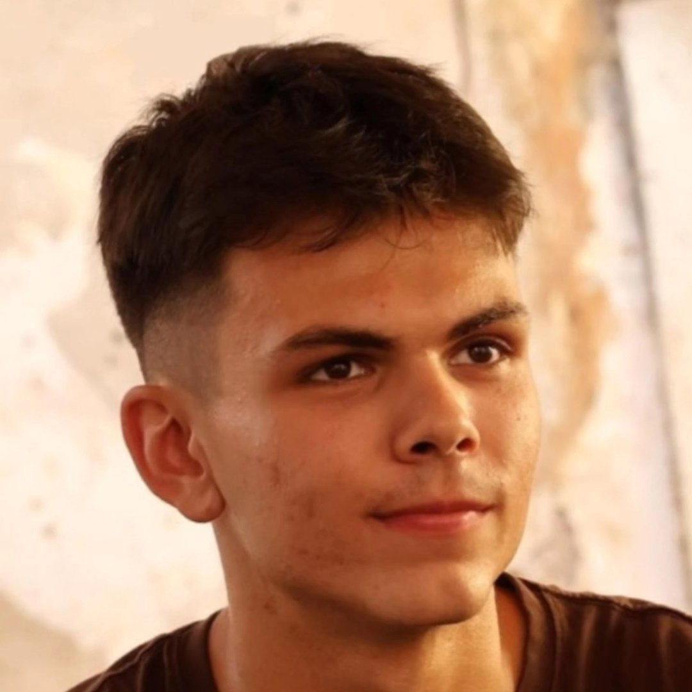
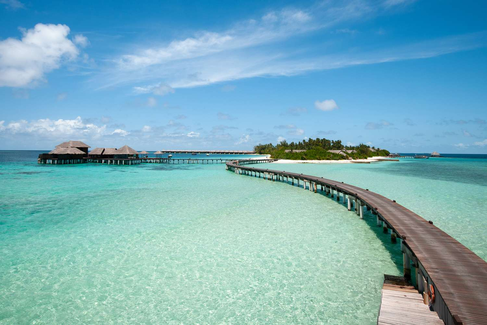
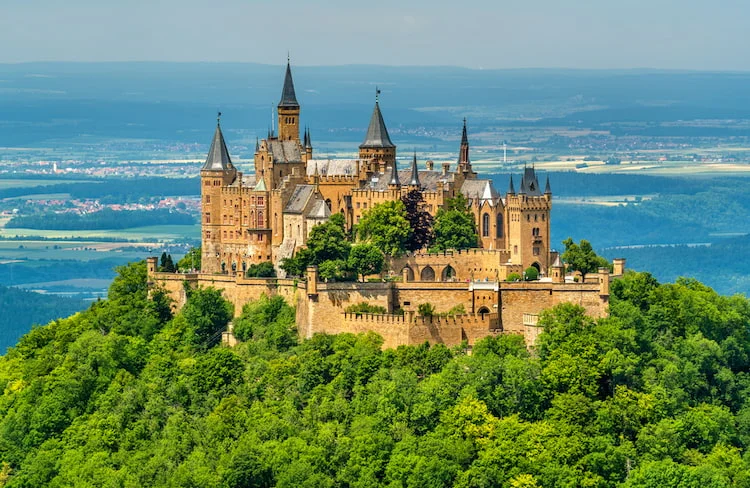
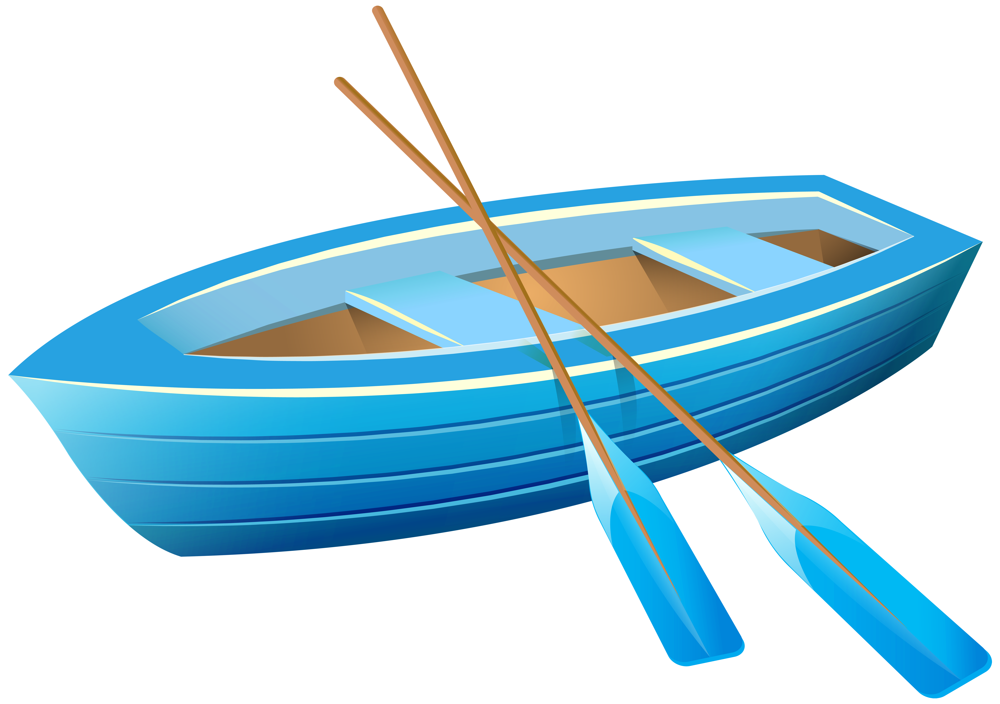

Filip Tomić
Opće informacije
Datum rođenja: 17.11.2003
Mjesto rođenja: Slavonski Brod
Mjesto stanovanja: Osijek
Spol: Muški
Hobi: Programiranje
Obrazovanje
- Osnovna škola: Dr. Stjepan Ilijasević
Centralna Osnovna škola u Oriovcu osnovana je 28. travnja 1961. godine za sela i naselja Brodski Stupnik, Stari Slatinik, Gornji Andrijevci, Rižino polje, Jelik i Lovčić. Tada je u svom sastavu imala i područna odjeljenja Brodski Stupnik, Stari Slatinik, Gornji Andrijevci, „Rižino polje“, „Jelik“ i Lovčić. Odluku o osnivanju donio je narodni odbor općine Oriovac. Od 1.rujna 1968. godine PŠ Slavonski Kobaš s odjeljenjima od 1. do 8. razreda je u sastavu OŠ Oriovac na temelju odluke od 5. srpnja 1968. godine koju je donijela Skupština općine o mreži osnovnih škola na području općine Slavonski Brod, a u sastavu Osnovne škole pored navedenih nalaze se kao područne škole još i PŠ Lovčić s odjeljenjem od 1. do 4. razreda i PŠ Živike s odjeljenjem od 1. do 4. razreda.
- Srednja škola: Gimnazija Matija Mesić
Ova škola ima bogatu tradiciju, u svijet je ispratila sada već više od stotinu generacija maturanata. Da bi opstala kroz svoju dugu povijest, prolazeći kroz brojne teškoće i promjene, morala se i sama škola mijenjati i prilagođavati. Preživjeti i biti uspješna, danas, znači suočiti se s brojnim problemima suvremenog društva i vremena. Ovo je vrijeme globalizacije i depopulacije bremenito različitim krizama, nesigurnostima, vrijeme brzih promjena uslijed znanstvene i tehnološke revolucije, vrijeme brojnih izazova. Uspješno odgovoriti na sve njih
- FERIT Osijek
Fakultet elektrotehnike, računarstva i informacijskih tehnologija u Osijeku visoko je učilište u sastavu Sveučilišta Josipa Jurja Strossmayera u Osijeku.Godine 1987. Studij je, unatoč materijalnim i statusnim poteškoćama, upisan u registar znanstveno-istraživačkih organizacija, a sljedeće je godine preimenovan u Studij elektrotehnike.
Radno iskustvo
Studentski poslovi u IT sektoru, rad na web aplikacijama i održavanje sustava.
Izrada web stranica, zavrsnih projekata.
Vještine
- HTML, CSS, JavaScript
- C. C++, C#, Java, Kotlin, Python
- Rad s bazama podataka (SQL)
Galerija
JPG

GIF
BMP

PNG

AVIF

WEBP

RAW

SVG

Audio predstavljanje MP3
Video MP4 - FERIT Osijek
Video izvor: FERIT 2024 || Uredio: Filip Tomić